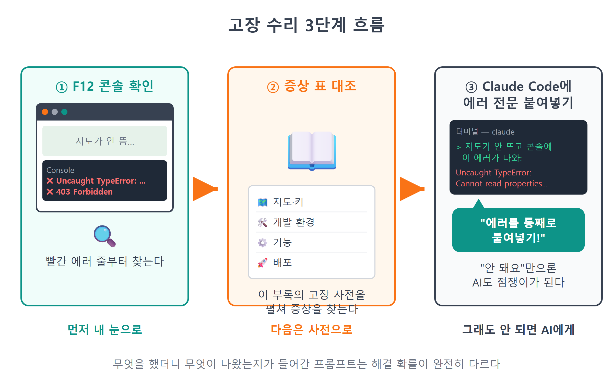
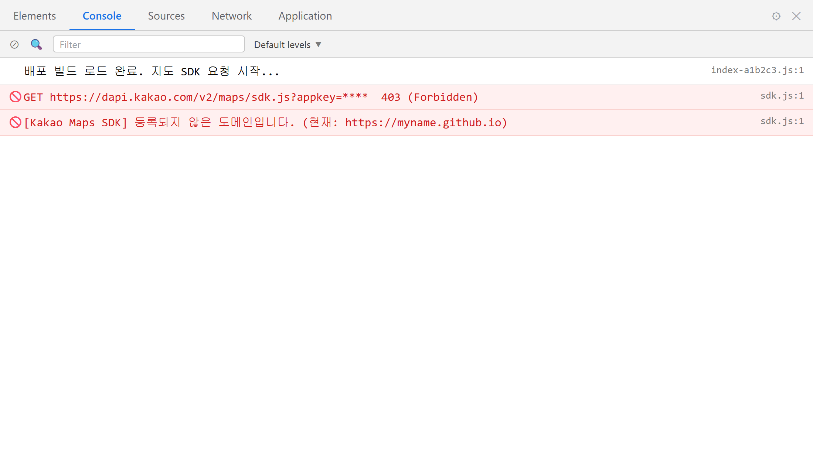

부록 B 트러블슈팅 & 치트시트¶
이 장에서 배우는 것
- 고장 신고 접수 순서 — 콘솔 확인 → 증상 표 대조 → Claude Code에게 수리 의뢰
- 이 책에서 만난 대표 고장 15가지의 증상 → 원인 → 해결 총정리
- git · gh · npm 명령을 한 장에 모은 명령어 치트시트
- 카카오지도 SDK의 객체·메서드를 한눈에 보는 SDK 치트시트
축하합니다. 여기까지 오셨다면 여러분의 지도 웹앱은 이미 세상에 공개되어 있을 것입니다. 그런데 앱은 살아 있는 물건입니다. 내일 새 기능을 붙이다가, 혹은 석 달 뒤 노트북을 바꾸고 프로젝트를 다시 열다가, 분명히 뭔가가 또 고장 납니다. 그때마다 책을 처음부터 뒤질 수는 없죠. 그래서 이 부록을 준비했습니다. 고장 났을 때 딱 이 부록만 펴면 되도록, 책 전체에 흩어져 있던 트러블슈팅과 명령어, SDK 지식을 한자리에 모았습니다.
읽는 방법은 간단합니다. 지금 뭔가 안 되고 있다면 B.1의 증상 표에서 비슷한 증상을 찾으세요. 명령어가 기억나지 않으면 B.2를, "그 메서드 이름이 뭐였더라?" 싶으면 B.3을 펴면 됩니다. 책상 옆에 두고 사전처럼 쓰는 부록입니다.
B.1 증상 → 원인 → 해결: 고장 사전¶
표로 들어가기 전에, 바이브코딩식 고장 수리의 순서부터 다시 새깁시다. 이 책을 따라오며 몸에 익혔겠지만, 급할 때일수록 순서가 무너집니다.
1단계, 콘솔부터 엽니다. 브라우저에서 ++f12++ 를 누르고 Console 탭을 봅니다. 빨간 글씨가 있다면 그것이 고장 신고서입니다. 에러 메시지는 무섭게 생겼지만 사실 가장 친절한 단서입니다. 읽는 요령은 두 가지입니다. 먼저 첫 문장을 읽으세요. 401 (Unauthorized), kakao is not defined처럼 첫 줄에 병명이 나옵니다. 다음으로 메시지 오른쪽 끝의 파일 이름과 줄 번호(loader.js:14 같은 표기)를 보세요. 사고가 난 정확한 위치입니다. 영어라서 겁먹을 필요도 없습니다. 9장에서 우리가 loader.js에 심어 둔 'VITE_KAKAO_JS_KEY가 .env에 없습니다.' 같은 한국어 에러도 여기에 찍히고, 영어 메시지는 어차피 다음 단계에서 AI가 통째로 읽어 줄 테니까요.
2단계, 아래 표에서 증상을 찾습니다. 원인을 짚을 수 있으면 해결의 절반은 끝난 것입니다.
3단계, 그래도 모르겠으면 Claude Code에게 넘깁니다. 이때 요령이 하나 있습니다. "안 돼요"라고만 하면 AI도 점쟁이가 되어야 합니다. 에러 메시지를 통째로 복사해서 붙여 주세요. 무엇을 했더니 무엇이 나왔는지가 들어간 프롬프트는 해결 확률이 완전히 다릅니다.
🗣 이렇게 시키세요
npm run dev로 서버를 켜고 localhost:5173에 들어갔는데 지도가 안 뜨고 콘솔에 이 에러가 나와: (에러 메시지 전체 붙여넣기). 원인을 찾아서 고쳐줘. 고치기 전에 뭘 바꿀 건지 먼저 설명해줘.

그림 B.1 — 고장 수리 3단계 흐름
이제 고장 사전입니다. 증상별로 지도·키, 개발 환경, 기능, 배포 네 묶음으로 나눴습니다.
지도와 키 — 첫 화면에서 막힐 때¶
첫 지도를 띄우는 9장 근처에서 가장 많이 만나는 고장들입니다. 공통 뿌리는 하나, 카카오 서버와의 악수가 실패했다는 것입니다. 회색 화면만 예외인데, 이건 서버가 아니라 우리 CSS의 문제입니다. 콘솔에 에러가 있으면 아래에서 번호(401/403)를 찾고, 에러가 없는데 회색이면 첫 번째 항목부터 보세요.
| 증상 | 원인 | 해결 |
|---|---|---|
| 지도 자리가 회색 또는 빈 화면, 콘솔 에러 없음 | #map 컨테이너의 높이가 0. CSS에서 높이를 안 줬거나, 숨겨진(display:none) 상태에서 지도를 만듦 |
#map에 height: 100vh 등 실제 높이를 지정. 숨겼다 펼치는 화면이면 펼친 뒤 map.relayout() 호출 (23장 사이드바 접기에서 배운 그 방법) |
| 콘솔에 401 (Unauthorized) | 가장 흔한 원인은 카카오 서버의 열쇠 거부. JS 키가 아닌 REST API 키를 넣었거나, 키를 복사하다 한 글자가 잘렸거나, 키를 재발급한 뒤 .env를 안 바꿈 |
developers.kakao.com → 전체 앱 → 앱 > 플랫폼 키에서 JavaScript 키를 다시 복사해 .env에 붙여넣고 서버 재시작 (7장) |
| 콘솔에 403 (Forbidden) | 가장 흔한 원인은 키는 맞지만 지금 접속한 주소가 SDK 도메인에 미등록. 카카오는 등록된 도메인에서 온 요청만 허락함. 프로토콜(http/https)은 하나만 등록해도 양쪽 인정, 호스트·포트는 정확히 일치해야 함(localhost:5173 ≠ 5174) |
플랫폼 키 → JavaScript 키의 JavaScript SDK 도메인에 현재 주소를 등록. 개발 중이면 http://localhost:5173, 배포 후면 Pages 주소까지 (7장 · 25장) |
콘솔에 kakao is not defined |
SDK 로드가 끝나기 전에 kakao.maps.*를 사용. autoload=false인데 kakao.maps.load() 콜백 밖에서 지도를 만들었거나, await loadKakaoSdk()를 빼먹음 |
지도 관련 코드는 반드시 await loadKakaoSdk() 다음 줄부터 실행되게 순서를 잡기 (9장) |
'카카오 SDK 로드 실패 — 키/도메인 확인' 에러 |
loader.js의 script.onerror가 발동. 인터넷이 끊겼거나 키·도메인 문제로 SDK 파일 자체를 못 받음 |
네트워크 확인 → 401/403 항목 순서로 점검 (9장) |
여기서 401과 403의 차이를 한 번 더 새겨 둡시다. 헷갈리기 쉬운데 원인이 완전히 다릅니다. 401은 "너 누구야?" — 열쇠 자체가 틀렸다는 뜻이니 .env의 키를 의심하세요. 403은 "누군지는 알겠는데 여기선 안 돼" — 열쇠는 맞고 접속한 주소가 등록 목록에 없다는 뜻이니 카카오 콘솔의 JavaScript SDK 도메인 설정을 의심하세요. 번호 하나 차이로 수리할 곳이 .env와 카카오 콘솔로 갈립니다. 다만 이 짝은 공식 분류표가 아니라 가장 흔한 원인을 가리키는 나침반입니다. 광고 차단기나 보안 정책처럼 번호조차 안 찍히는 실패도 있으니, Network 탭에서 실패한 dapi.kakao.com 요청의 URL과 응답을 직접 확인하고 수리를 시작하세요.
개발 환경 — 터미널에서 막힐 때¶
이번엔 브라우저가 아니라 터미널에서 나는 고장입니다. 특징이 하나 있는데, 대부분 코드 잘못이 아니라 환경 잘못이라는 점입니다. 그래서 해결책도 코드 수정이 아니라 재시작·재설치·설정 확인 쪽입니다. 특히 "터미널을 껐다 켠다"는 처방이 자주 나오는데, 미신이 아닙니다. 터미널은 켜지는 순간의 환경(PATH, .env 등)을 기억하고 그 뒤의 변화를 모르기 때문에, 환경을 바꿨으면 새로 태어나게 해 줘야 합니다.
| 증상 | 원인 | 해결 |
|---|---|---|
import.meta.env.VITE_KAKAO_JS_KEY가 undefined |
① 변수 이름에 VITE_ 접두사가 없음 — Vite는 VITE_로 시작하는 변수만 브라우저에 넘겨줌 ② .env를 고친 뒤 개발 서버를 재시작하지 않음 — .env는 서버가 켜질 때 한 번만 읽힘 ③ .env 파일 위치가 프로젝트 루트가 아님 |
변수 이름을 VITE_KAKAO_JS_KEY로 확인 → .env가 package.json 옆에 있는지 확인 → 서버를 ++ctrl+c++ 로 끄고 npm run dev 재시작 (8장) |
npm run dev 했더니 주소가 5174로 뜸 (5173 충돌) |
5173 포트를 다른 프로그램(대개 끄지 않은 또 하나의 개발 서버)이 이미 사용 중. Vite가 자동으로 옆 포트를 잡은 것. 문제는 카카오 JavaScript SDK 도메인에 5173만 등록해서 5174에선 403이 남 | 다른 터미널 창에 살아 있는 npm run dev를 찾아 ++ctrl+c++ 로 종료 후 재시작. 못 찾겠으면 netstat -ano | findstr 5173으로 점유한 프로세스 확인 |
node / git / gh 입력 시 "인식할 수 없는 명령" |
설치 직후라면 PATH 반영 전 — 설치 프로그램이 등록한 경로를 이미 켜져 있던 터미널은 모름. 아니면 설치 시 PATH 등록이 누락 | 터미널(과 VS Code)을 완전히 껐다가 새로 열기. 그래도 안 되면 재설치하며 PATH 옵션 확인 (2장 · 3장 · 5장) |
npm install 이 에러로 중단 |
네트워크 순단, 회사·학교 프록시, 또는 꼬여 버린 캐시·의존성 | 인터넷 확인 후 재시도 → 안 되면 node_modules 폴더와 package-lock.json을 지우고 npm install 다시 → 그래도 안 되면 npm cache clean --force 후 재시도. 에러 로그를 Claude Code에 붙여넣는 게 가장 빠를 때도 많음 |
기능 — 마커·검색·저장이 이상할 때¶
지도는 뜨는데 그 위의 기능이 말썽인 경우입니다. 이 묶음의 특징은 에러 없이 조용히 이상한 경우가 많다는 것입니다. 마커가 안 보여도, 저장이 안 돼도 콘솔은 멀쩡할 수 있죠. 이럴 땐 콘솔에 직접 물어보는 게 지름길입니다. console.log(store.all())로 데이터가 진짜 있는지, console.log(map.getCenter())로 지도가 어디를 보고 있는지 찍어 보세요. 증상이 아니라 데이터를 보면 원인이 드러납니다.
| 증상 | 원인 | 해결 |
|---|---|---|
| 마커가 안 보임 | ① new kakao.maps.LatLng(lat, lng)에서 위도·경도 순서를 바꿔 넣음(한국 좌표인데 아프리카 앞바다에 찍힘) ② 마커 생성 시 map 연결(옵션 또는 setMap)을 빼먹음 ③ 카테고리 필터가 켜져 있어 걸러짐 |
좌표 순서 확인(한국은 위도 33~38, 경도 124~132) → marker.setMap(map) 확인 → 필터를 "전체"로 (11장 · 14장) |
| 커스텀 오버레이가 엉뚱한 위치에 붙음 (마커를 가리거나 아래로 처짐) | yAnchor 미설정. 기본값 0.5라 오버레이의 세로 중앙이 좌표에 붙음 — 말풍선은 꼬리 끝이 좌표에 닿아야 함 |
yAnchor를 1보다 크게(우리 앱은 마커 높이만큼 더 올리려 1.4 근처) 조정해 꼬리가 마커 위에 앉게 하기 (13장) |
검색을 눌러도 결과가 없거나 콘솔에 kakao.maps.services is undefined |
SDK 주소에 &libraries=services가 빠짐 — 검색은 부록 라이브러리라 따로 신청해야 실림 |
loader.js의 SDK 주소에 &libraries=services,clusterer 확인 후 새로고침 (15장). 진짜 결과가 0건일 수도 있으니 Status.ZERO_RESULT 처리도 확인 |
| 새로고침하면 저장한 장소가 사라짐 (localStorage에 안 남음) | ① 추가·수정 코드가 store를 거치지 않아 save()가 안 불림 ② 시크릿(사생활 보호) 창 — 닫으면 localStorage가 비워짐 ③ 저장 데이터가 깨져 load()의 try-catch가 기본 데이터로 후퇴 |
데이터 변경은 반드시 store.add/update/remove로만 → 일반 창에서 테스트 → F12 → Application → Local Storage에서 my-map-places-v1 키 확인 (17장) |
| 장소가 많아도 클러스터로 안 묶임 | ① &libraries=clusterer 누락 ② 마커를 클러스터러에 안 넣고 setMap(map)으로 지도에 직접 올림 ③ 현재 확대 레벨이 minLevel보다 낮아 묶지 않는 게 정상 동작 |
SDK 주소 확인 → 마커는 clusterer.addMarkers(markers)로만 등록 → 지도를 축소해 minLevel 이상에서 확인 (22장) |
배포 — 세상에 내놓은 뒤 막힐 때¶
마지막 묶음은 "내 컴퓨터에선 되는데 배포하면 안 되는" 유형입니다. 로컬과 배포 환경의 다른 점 — 주소가 다르고, 경로 기준이 다르다는 것 — 이 모든 원인입니다. 25장에서 겪었지만 리포를 새로 만들 때마다 또 만나게 되니 여기 박아 둡니다.
| 증상 | 원인 | 해결 |
|---|---|---|
| GitHub Pages 주소가 흰 화면, 콘솔에 JS·CSS 404 | vite.config.js의 base 미설정. Pages 주소는 사용자명.github.io/리포명/처럼 한 칸 들어간 주소인데, 빌드 결과물이 파일을 루트(/)에서 찾음 |
vite.config.js에 base: '/리포명/' 설정 후 다시 커밋·푸시해 재배포 (25장) |
| 배포 페이지는 뜨는데 지도만 안 뜸 (콘솔 403) | 카카오 JavaScript SDK 도메인에 localhost:5173만 등록되어 있고 배포 도메인은 미등록 |
플랫폼 키 → JavaScript 키의 SDK 도메인에 https://사용자명.github.io 추가 (25장) |
⚠️ 주의
표의 해결책을 적용해도 브라우저가 옛날 파일을 기억하고 있으면 증상이 그대로일 수 있습니다. 특히 배포 관련 문제는 고친 뒤 ++ctrl+shift+r++ (캐시 무시 새로고침)로 확인하세요. "고쳤는데도 똑같아요"의 절반은 캐시입니다.

그림 B.2 — 403 Forbidden 에러가 찍힌 콘솔
B.2 명령어 치트시트 — git · gh · npm¶
이 책에서 손에 익힌 터미널 명령을 모았습니다. 명령은 외우는 것이 아니라 찾는 것입니다. 이 표를 펴 놓고 쓰다 보면 자주 쓰는 것부터 저절로 손에 붙습니다. 각 표의 제목에 그 도구가 처음 등장한 장을 적어 두었으니, "이 명령이 왜 필요하더라?" 싶으면 그 장으로 돌아가세요.
시작하기 전에 터미널의 만능 치트키 하나만 소개합니다. 어떤 명령이든 뒤에 --help를 붙이면(git commit --help, gh repo create --help) 그 명령의 사용법과 옵션 목록이 나옵니다. 이 표에 없는 옵션이 궁금할 때 검색보다 빠를 때가 많습니다.
git — 되돌리기라는 안전벨트 (3장 · 24장)¶
| 명령 | 하는 일 |
|---|---|
git -v |
설치 확인 (버전 출력) |
git config --global user.name "이름" |
커밋에 적힐 이름 설정 (최초 1회) |
git config --global user.email "메일" |
커밋에 적힐 이메일 설정 (최초 1회) |
git init |
현재 폴더를 저장소로 만들기 |
git status |
무엇이 바뀌었는지 확인 — 막히면 일단 이것부터 |
git add . |
바뀐 파일 전부를 커밋 대기줄에 올리기 |
git commit -m "메시지" |
대기줄의 변경을 하나의 기록(커밋)으로 저장 |
git log --oneline |
커밋 역사를 한 줄씩 훑어보기 |
git diff |
아직 커밋 안 된 변경의 내용 비교 |
git restore 파일명 |
커밋 안 된 변경을 버리고 파일 되돌리기 |
git push |
로컬 커밋을 GitHub에 올리기 |
git pull |
GitHub의 변경을 로컬로 받아오기 |
gh — 터미널에서 GitHub까지 (5장 · 24장)¶
| 명령 | 하는 일 |
|---|---|
winget install GitHub.cli |
gh 설치 (윈도우) |
gh auth login |
브라우저 인증으로 GitHub 로그인 |
gh auth status |
로그인 상태 확인 |
gh repo create 이름 --public --source . --push |
현재 폴더를 공개 리포로 만들고 바로 푸시 |
gh repo view --web |
지금 리포를 브라우저로 열기 |
gh browse |
리포 페이지 열기 (위와 비슷한 단축) |
git과 gh의 역할 분담이 헷갈린다면 이렇게 기억하세요. git은 내 컴퓨터의 역사 관리인, gh는 GitHub라는 웹사이트의 원격 조종기입니다. 커밋·되돌리기처럼 내 폴더 안에서 벌어지는 일은 git이, 리포 만들기·페이지 열기처럼 GitHub 계정 차원의 일은 gh가 맡습니다. 그 사이를 잇는 다리가 git push와 git pull이고요.
npm — Node의 패키지 창구 (2장 · 8장)¶
| 명령 | 하는 일 |
|---|---|
node -v / npm -v |
Node / npm 설치 확인 |
npm create vite@latest |
Vite 프로젝트 뼈대 생성 (8장) |
npm install |
package.json의 의존성 전부 설치 |
npm run dev |
개발 서버 켜기 (기본 5173 포트) |
npm run build |
배포용 결과물을 dist/에 생성 (25장) |
npm run preview |
빌드 결과물을 로컬에서 미리 확인 |
npm install -g @anthropic-ai/claude-code |
Claude Code 전역 설치 (4장) |
npm cache clean --force |
설치가 꼬였을 때 캐시 청소 |
💡 팁
명령이 기억나지 않을 때 가장 바이브코딩다운 방법은 따로 있습니다. Claude Code에게 "지금까지 작업 커밋하고 푸시해줘"라고 말로 시키는 것입니다. 다만 AI가 실행하는 명령을 이 표와 대조하며 눈으로 따라 읽는 습관은 꼭 유지하세요. 그래야 AI 없이도 살아남는 개발자가 됩니다.
B.3 카카오 SDK 치트시트¶
마지막은 이 책의 주인공, 카카오지도 JavaScript SDK입니다. 우리가 쓴 객체 여덟 가지를 만드는 법과 자주 쓰는 메서드 중심으로 정리했습니다. 모든 객체는 kakao.maps. 아래에 살고, new로 태어나며, 옵션은 중괄호 객체 하나로 받습니다 — 이 세 가지 공통 문법만 기억하면 표가 술술 읽힐 것입니다. 표의 코드는 형태를 보여 주는 요약이니, 전체 맥락은 각 줄에 표시된 장을 참고하세요. 그리고 이 표는 Claude Code에게 시킬 때도 쓸모가 있습니다. "마커를 옮겨줘"보다 "setPosition으로 마커를 옮겨줘"라고 시키면 AI가 헤맬 확률이 뚝 떨어집니다. 정확한 부품 이름을 아는 사람이 더 좋은 지시를 내립니다.
| 객체 | 만드는 법 | 자주 쓰는 것 | 한 줄 설명 (장) |
|---|---|---|---|
Map |
new kakao.maps.Map(container, { center, level }) |
setCenter(latlng) 즉시 이동 · panTo(latlng) 부드러운 이동 · setLevel(n) 확대 조절 · getCenter() / getLevel() 현재 상태 읽기 · relayout() 컨테이너 크기 변경 후 재계산 · addControl(...) 컨트롤 부착 |
지도 본체. 컨테이너·center·level 3요소로 태어남 (9~10장) |
LatLng |
new kakao.maps.LatLng(lat, lng) |
getLat() / getLng() |
위도·경도 한 쌍. 위도가 먼저라는 것만 기억 (9장) |
Marker |
new kakao.maps.Marker({ position, map, image, title }) |
setMap(map) 지도에 올리기 · setMap(null) 내리기 · setPosition(latlng) 위치 변경 · setImage(img) 이미지 교체 |
좌표에 꽂는 핀 (11장) |
MarkerImage |
new kakao.maps.MarkerImage(src, size, options) |
src에 SVG data URI 가능 · size는 new kakao.maps.Size(w, h) · options.offset으로 꼭짓점 조정 |
마커의 옷. 카테고리별 색·이모지 핀이 이걸로 (11장) |
CustomOverlay |
new kakao.maps.CustomOverlay({ position, content, yAnchor }) |
setMap(map) 열기 · setMap(null) 닫기 · content에 HTML 문자열 · yAnchor로 세로 기준점 조정 |
HTML·CSS 자유형 말풍선. InfoWindow의 상위 호환 (13장) |
services.Places |
new kakao.maps.services.Places() |
keywordSearch(키워드, callback) · 콜백에서 status === kakao.maps.services.Status.OK 확인 · 결과의 y가 위도, x가 경도 |
키워드 장소 검색. &libraries=services 필수 (15장) |
MarkerClusterer |
new kakao.maps.MarkerClusterer({ map, averageCenter, minLevel, minClusterSize }) |
addMarkers(배열) 등록 · removeMarkers(배열) / clear() 비우기 |
마커 뭉치 관리인. &libraries=clusterer 필수 (22장) |
event |
(생성 없음 — 도구 모음) | kakao.maps.event.addListener(대상, '이벤트', 핸들러) · 지도 이벤트: click, dragend, zoom_changed · 마커 이벤트: click · 지도 클릭 핸들러의 e.latLng로 클릭 좌표 |
지도·마커에 귀를 다는 창구 (10장 · 16장) |
세 가지만 별도로 강조해 둡니다. 표를 훑다 보면 지나치기 쉬운데, 실전에서 가장 자주 발목을 잡는 지점들입니다.
첫째, 좌표 순서입니다. LatLng는 (위도, 경도) 순서인데, Places 검색 결과는 x가 경도, y가 위도입니다. 그래서 검색 결과로 좌표를 만들 때는 new kakao.maps.LatLng(item.y, item.x)처럼 뒤집어 넣어야 합니다. 15장에서 한 번 겪었지만, 몇 달 뒤에 또 틀리는 단골 함정입니다.
둘째, 부록 라이브러리입니다. Places와 MarkerClusterer는 기본 SDK에 없습니다. loader.js의 SDK 주소 끝에 &libraries=services,clusterer가 있어야 실려 옵니다. "분명 문서대로 했는데 undefined"라면 십중팔구 이것입니다.
셋째, 열고 닫기는 setMap 입니다. 마커도, 오버레이도 지도에 올릴 때는 setMap(map), 내릴 때는 setMap(null)입니다. 지웠다고 착각하기 쉬운데, setMap(null)은 화면에서 내려놓을 뿐 객체는 살아 있어서 언제든 다시 올릴 수 있습니다. 우리 앱의 말풍선 "하나만 열기"가 이 원리로 굴러갑니다.
B.4 마무리 — 고장을 대하는 태도¶
부록을 닫기 전에, 표 어디에도 담지 못한 가장 중요한 이야기를 하겠습니다. 이 책을 쓰는 동안에도 지도는 수십 번 회색이 되었고, 403은 셀 수 없이 만났습니다. 고장은 실력이 부족해서 나는 게 아니라 만들고 있다는 증거입니다. 아무것도 안 만들면 아무것도 안 고장 나니까요.
그리고 여러분에게는 이전 세대 입문자에게 없던 무기가 둘 있습니다. 하나는 git입니다. 커밋만 성실히 해 뒀다면 어떤 실험도 두렵지 않습니다. 최악의 경우 되돌리면 그만입니다. 다른 하나는 에러 메시지를 통째로 읽어 주는 AI 동료입니다. 에러를 붙여넣고, 원인 설명을 듣고, 고치기 전에 계획을 확인하는 습관 — 이 책이 처음부터 끝까지 반복한 그 리듬이 곧 여러분의 트러블슈팅 실력입니다.
한 가지 습관만 더 권합니다. 표에 없는 고장을 해결했을 때, 그 증상과 해결법을 어딘가에 한 줄이라도 적어 두세요. 프로젝트 폴더의 메모 파일이어도 좋고, 리포의 README 아래쪽이어도 좋습니다. 신기하게도 같은 고장은 꼭 다시 찾아오는데, 그때의 여러분은 오늘의 해결법을 까맣게 잊고 있을 것이기 때문입니다. 프로 개발자들이 블로그에 트러블슈팅 글을 쓰는 이유도 남에게 자랑하려는 게 아니라 미래의 자신에게 보내는 편지에 가깝습니다.
지도는 완성됐지만 여정은 끝나지 않았습니다. 26장에서 그린 다음 단계 로드맵 — 백엔드 저장, 로그인, 사진 업로드 — 어디로 가든, 고장 나면 이 부록으로 돌아오세요. 그리고 언젠가 이 표에 없는 고장을 스스로 해결하게 되는 날, 여러분만의 부록 C를 써 내려가기 시작한 것입니다.
📌 핵심 요약
- 고장 수리는 순서가 전부입니다: F12 콘솔 확인 → 증상 표 대조 → 에러 전문을 붙여 Claude Code에 의뢰
- 지도·키 문제의 3대장은 회색 화면(컨테이너 높이 0), 401(대개 잘못된 키), 403(대개 도메인 미등록) — 로컬은
localhost:5173, 배포 후엔 Pages 도메인까지 등록해야 하며, 도메인은 프로토콜 무관·호스트와 포트는 정확히 일치입니다 .env는VITE_접두사 + 서버 재시작이 세트, 검색·클러스터는&libraries=services,clusterer가 세트입니다- GitHub Pages 흰 화면은
vite.config.js의base: '/리포명/', 명령이 안 먹으면 터미널 재시작(PATH) 부터 - 명령과 메서드는 외우지 말고 이 부록에서 찾아 쓰세요 — 자주 쓰는 것은 저절로 외워집니다
🤔 생각해보기
Q1. 배포한 지도 앱이 내 PC에선 잘 되는데 친구 폰에서만 지도가 안 뜬다고 합니다. B.1의 표에서 어떤 항목부터 의심하겠습니까? 그 이유는 무엇인가요?
✍️ ________
✍️ ________
✏️ 연습 문제
.env의 키 이름을 일부러KAKAO_JS_KEY(접두사 없이)로 바꾸고 서버를 재시작해 보세요. 콘솔에 어떤 에러가 나오는지 확인하고,loader.js의 몇 번째 줄이 그 에러를 만들었는지 찾아보세요.loader.js의 SDK 주소에서&libraries=services,clusterer를 지우고 새로고침한 뒤, 검색 기능이 어떤 에러를 내는지 확인하고 원상 복구하세요.- B.2의 git 표만 보고, 파일 하나를 수정 → 상태 확인 → 커밋 → 푸시까지 명령 네 개로 완주해 보세요.
🔎 더 찾아보기
크롬 개발자도구 Network 탭— 콘솔 다음으로 강력한 수사 도구. 어떤 요청이 몇 번 상태 코드로 실패했는지 한눈에 보입니다git revert / git reset— 커밋 단위로 되돌리는 두 가지 방식과 그 차이카카오맵 API 공식 문서 (apis.map.kakao.com)— 이 표에 없는 객체와 옵션의 원전. Sample 페이지의 예제가 특히 유용합니다console.table()— 배열 데이터를 표로 찍어 주는 콘솔 명령. 장소 배열 디버깅이 한결 편해집니다
다음 장 예고 — 다음 장은 없습니다. 이 책의 지도는 여기까지고, 다음 페이지부터는 여러분이 직접 그립니다. 막히면 언제든 이 부록으로 돌아오세요. 즐거운 바이브코딩 되시길!